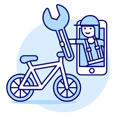

<header>
  
    <nav>
      <!-- Partie 1: Navbar avec un bouton "Connexion" à droite -->
      <div class="navbar">
        <a href="" routerLink="/home">Veco-Elo</a>
        <div class="connexion">
          <button class="btn-forum" routerLink="/forum">Forum des problèmes</button>
          <ng-container *ngIf="nomUtilisateurConnecte; else connexionBtn">
            <h3><a [routerLink]="['/profil_user']">{{ nomUtilisateurConnecte }}</a></h3>
            <button class="btn-deconnexion" (click)="deconnexion()"><i class="material-icons">logout</i></button>
          </ng-container>                 
          <ng-template #connexionBtn>
            <button class="btn-connexion" routerLink="/connexion">Connexion</button>
          </ng-template>
        </div>
      </div>          
    </nav>
  </header>

<router-outlet></router-outlet>

